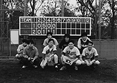

98.10.1（木）
・ちょっとした仕事の打ち合わせに野見さん来社。
・深夜1時過ぎに、先月よりマック版急速演技記録計のアルバイトとして働いている小野田君から「家の鍵を会社に忘れてしまい、取りに帰ろうにも終電が…」とTELがある。しぶしぶ居村氏が車で届けに行くことに。
・日曜日に行われる作画部門二次試験の準備がほぼ終了する。
98.10.2（金）
・神村氏が深夜、田辺氏とスケジュールについてひそひそばなし。青い顔になっていた。
・高畑監督の横に1.8mのがっしりとしたAVラックが置かれる。組立式の為、制作陣が総出で組み立てるが、頑丈にできているため簡単には組み上がらない。ようやく出来上がってみれば背板が一枚裏返し。またバラす気にはなれず「どうせ隠れるから」とそのまま。
98.10.3（土）
・一次試験の応募作品を返却するため、バーを使って総務洞口氏を中心にみんなで袋詰め。500通以上になるため、かなりの大仕事となる。
・牛丼の吉野屋が100円引きと知って、貧乏なスタッフ代表として神村氏が12人前の牛丼を入手すべく、車で10分ほどの吉野屋に向かうも超満員。必死に並んでなんとか入手。
98.10.4（日）
・作画部門二次試験の為、朝9時半出社。午前中は実技試験、午後からは面接と、大忙しの一日。今年は例年になく良い人材が集まっている。一応最終面接に6人が進む。
98.10.5（月）
・二馬力の宮崎監督の元へ昨日の実技試験の報告に向かう。「なんでこんなヤツを選んだ」とか言われるのを覚悟していたら、意外にすんなり「いいんじゃない」との感想。
・最近制作部では、演助やQAR担当等も含め、月曜朝の定例報告会を行っている。これは互いに意志の疎通をはかっておかないと、デジタル化の影響、「となりの山田くん」の特異さもあり、現物のCUTを見ただけでは、何処まで進行したのか非常に把握しづらくなっている為。
98.10.6（火）
・大学院進学の為、半年前にジブリを辞めた石曽根くんが、とりあえず一校受かったということで、報告がてら遊びに来る。
・制作部居村氏がついに自宅を出る決心をし、小金井にアパートを探している。
・原作入り完全版シナリオを作成しているが、またしても縦書きワープロの「遅い、不自由」な使い勝手に悩まされている。
・絵コンテ12-1、12-7、15CUT 87秒分アップ。
・夕方から何人かが、「○狼」の初号にお邪魔するが、面白かったと大好評。
98.10.7（水）
・絵コンテ7-7、6CUT20.5秒アップ。
・高畑監督、演助の伊藤氏、アビッドの古城氏、QARの斎藤氏等が集まって、今後のQAR等チェック問題について話し合いが持たれる。
98.10.8（木）
・絵コンテ9-2 9CUT分56.5秒アップ。ここ数日は毎日絵コンテが上がっている。このまま一気に行きたいものだ。
・11月の定例制作会議が行われる。
98.10.9（金）
・動画の線がスキャナーで上手く出ない問題が再燃。今までのセルアニメ風のかっちりした線ではないのでなかなか上手くいかない。当面は出ないCUTがあればその都度相談。
・絵コンテ4-3 7CUT32秒分アップ。
・オムニバスの糠塚さん来社。完成版シナリオの印刷を発注。
・今年もジブリの付近に焼き芋屋が出現する季節になってきたが、ついつい「やきいも～」の呼び声に釣られて芋を買いに出た門屋さんが、ついでにこの大学生のアルバイト氏に「焼き芋屋は儲かるのか」と取材。なんでも車や芋など焼き芋一式セットを一日１万円で借り、それ以上売上があればそれが手取りになるというシステムらしい。「へ～儲かる？」との問に「今日で三日目ですが、まだ1,000円しか儲けがありません…」との返事。き、きびしい。
98.10.12（月）
・絵コンテシーン8-3 5CUT40秒アップ。
・引っ越しを画策していた制作部の居村君が突然結婚宣言。鈴木プロデューサーをはじめ制作部一同愕然となる。普通結婚も間近になってくるとなんとなく幸せそうだなとか、なんとなく付き合っている彼女がいるのか、とか何も知らなくても雰囲気が伝わってきそうなものだが、彼の場合はまったくそんな感じは微塵もなかったのだ。本人は「びっくりしたでしょう」と勝ち誇っていた。
98.10.13（火）
・絵コンテ、シーン8-4、15CUT分110.5秒アップ。
・今週金曜日に行われる予定の野球の試合に向け、高橋、門屋、稲城、川端、田中の5人がバッティングセンターヘ向かう。これでちょうど筋肉痛が抜ける金曜日に試合となる計算だ。
・絵コンテ、シーン13-2、5CUT33秒分アップ。
98.10.14（水）
・二階作画ルームのちょうど真ん中にあるエアコン吹きだし口に突如スズメ蜂が出現。女性スタッフの悲鳴とともに二階は騒然となる。早速結婚を控えた制作居村氏がキンチョールをもって駆除に登場するも「キンチョールで大丈夫か、妻を一人残すのか」との声に断念。結局武力はいかん、とのことで平和解決を模索、スタジオ内の電気を消し、天窓から外へ逃がす作戦が取られる。作戦は見事成功し一人のけが人も出さずに無事問題は解決する。ところでこの吹きだし口近くにいた、日頃沈着冷静で取り乱すことの決してない安藤氏が、蜂から真っ先に逃げて行くのを目撃される。「彼にも弱点があったのか」と周りの人はこそこそ話しをしている。
・深夜鈴木プロデューサーの野球教室が開かれる。「体重を上手く左足に乗せること、ヘッドアップせずボールを最後まで見ること」等々、かつて徳間書店の首位打者で鳴らした鈴木プロデューサーの教えに、田中、門屋両氏もふんふんと頷くばかり。これで金曜日の試合は頂きだ。
98.10.15（木）
・最近遅刻をする人が目立ってきたため、米沢さんが会議室に一人一人を呼んで注意する。
・浦谷さん来社。今日もビデオを回す。
・シーン4-12が仕上げに回る。
・○○塾が三週間振りに開かれる。今回は課題がかなりきつかった為、四人ほど提出を断念した人が出る。
98.10.16（金）
・今朝行われる予定だった野球の試合は雨のため中止となる。
・宮崎監督、鈴木プロデューサーが面接官となり、来年度作画研修生の最終面接が行われる。結果、今日来社してもらった六人が全員合格となる。
・今日から制作の新人石井君が出社。なんと張り切って朝9時にジブリに来るが当然制作は誰も来ていなかったので、一時間程バーで待っていたそうな。
98.10.17（土）
・最近すっかり制作部をきれいにすることに生きがいを感じている鈴木プロデューサーが、制作の棚の整理案を出してきた。早速制作でその案の通りに模様替えをするも、出来上がって見ると余りに不自然で変。神村氏が「変だよね」と周りの人に必死にアピールするも、当の鈴木さんは変な事にまったく気付かず。
・内線動画を描きやすい様に、現在使っている動画用紙より、2mm短いものをナカザワに注文。届くのに一週間ほどかかりそうなので、取り合えず千枚程裁断機で2mmカット。
98.10.18（日）
・来年度の新人研修、仕上部門と美術部門の二次試験・面接が行われる。仕上げは15人、美術は12人が参加。
98.10.19（月）
・マック版急速演技記録計係の斎藤君が、仕事の合間をぬって、山田君のキャラクターアイコンを作成する。なかなかかわいいと社内で大好評。
・神村氏がぶつぶつ言っていた制作の棚が鈴木さん命令で早くも撤去。最近制作は、ジブリ内の棚や机を上げたり下げたり組み立てたりばらしたりと大忙し。
・絵コンテ、先週末に9-12 22CUT130秒分、本日13-5 8CUT59.5秒分、15-2 12CUT53.5秒アップ。
98.10.20（火）
・絵コンテ、シーン15-6 5CUT21.5秒分アップ。
・「となりの山田君」アイコンに気を良くした斎藤君が、起動画面やデスクトップピクチャーの山田くんバージョンを作って披露。評判は良かったのだが某氏に「斎藤君暇なの？」と聞かれ肩を落としている。
98.10.21（水）
・米沢さんがもうすぐ○○銀行へ帰ってしまうため、宮崎監督や鈴木プロデューサー等で送別会が行われる。
・高畑さんも含めて、最終スケジュールの話し合いが持たれる。なかなか厳しいスケジュールだ。「もののけ姫」以上か。
98.10.22（木）
・次回の野球の試合が、10月29日に決定する。相手はサンライズ大橋氏率いるモコマッツ。早速午後9時頃、門屋、洞口、川端等と車で５分ほどの怪しいバッティングセンターへ行き、ストライックアウトを投げまくる。
98.10.23（金）
・スタジオ内で最後のパーテーション工事が行われる。これで壁の塗り替え作業から始まった一連の改装工事が終了する。
・深夜宮崎監督が来社。居村君が買うと豪語しているメッサーシュミットのレプリカキットカーについて、制作部みんなで激論を交わす。
98.10.24（土）
・門屋、稲城両氏と共に、膨大に送られて来た、のぼる、のの子役のテープを一通り聞く。量が多すぎて頭がパニック。
・絵コンテ、シーン14-4、26CUT分133秒アップ。
98.10.26（月）
・シナリオ印刷作業が理由あってやり直しとなる。若干誤植もあったのでついでに徹底的に校正作業を行う。
98.10.27（火）
・4シーンまとめてラッシュチェックが行われる。
・外注で動画をお願いする二人が来社。上がっている絵や資料を見てもらう。
・撮影部がビデオの仕事のお手伝いで大忙し。
・「車を買い換える」と言って、ディーラーに注文してから、既に半年以上経過し、我慢も限界にまで達していた百瀬さんが、買う予定の車アルファ156を借りてくる。早速ジブリの車好きが集まり、ボンネットを開けては「やっぱりイタ車は…」と車談義。
98.10.28（水）
・来月頭にみんなを集めて出来上がったシーンのラッシュを上映することになり、高畑監督がそれをピックアップ。
・夕方、神村氏が真面目な顔をして出て行ったので、外でスケジュールの打ち合わせでもしていると思ったら、なんと米沢さんの手びきで、野中、村田、西方、門屋の面々と共に○○銀行の女子社員との合コンに参加していたことが発覚、呼ばれなかった独身者達の大顰蹙を買っている。結婚を控えた居村氏まで「なぜ俺を呼ばなかった～！」と叫んでいた。因みに結果は全員玉砕とのこと。
98.10.29（木）
・シーン 14-5、6のコンテ、計19CUT 119秒分アップ。
・朝9時より、小金井球場において、サンライズのモコマッツとの野球の試合が行われる。久しぶりの試合で緊張したのか、一回を終了した時点で1対2と劣勢である。しかし徐々にエンジンがかかってきたのか、二回に打者9人で5点をを奪う猛攻。結局終盤小刻みに点数を奪われたが、6対5で逃げきり見事通算3勝目を上げる。ところでこの試合、CG部の山田君が二度打席に立ったのだが、二度ともデッドボール。この当たり屋ぶりに、門屋氏が「山田君が二度とも当たった。これは『となりの山田くん』も当たるに違いない」とわけの分からない理論をぶち上げていた。

98.10.30（金）
・来年度研修生・仕上げ、美術部門の最終面接が行われ、美術一人、仕上二人が合格となる。
・シーン7-5のコンテ5CUT40秒アップ。
98.10.31（土）
・高畑監督が紫綬褒章を授賞することになり、会議室で各社からのインタビューを受ける。
・田中、武重両美術スタッフが高畑監督に描き貯めたボードを見せる。
・米沢さんの送別会が行われるが、次の勤務地が地元大阪ではなく東京、しかも担当が徳間書店と聞いて、みんないまいち送別会という雰囲気にはならず、単なる飲み会と化す。
| 次のページへ |
| 日誌索引へ戻る |